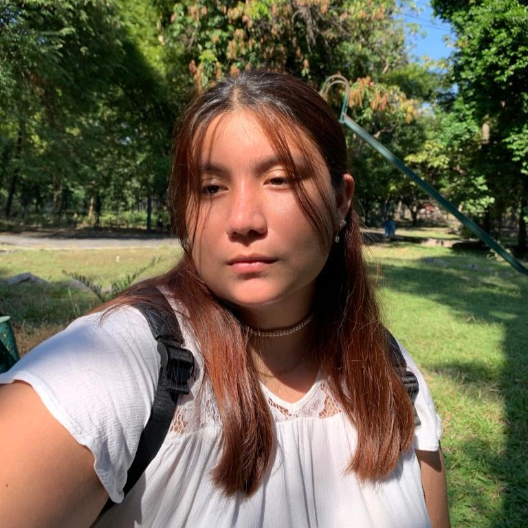

Hola, soy Daniela Velador

Estudiante con aspiraciones en convertirse full stack developer. Daniela es una persona apasionada por la tecnología y el desarrollo de software. Su enfoque se centra en comprender cómo funciona una aplicación en su conjunto, desde la interfaz de usuario (frontend) hasta el servidor y la base de datos (backend).
Desarrollo Web
A lo largo de mi carrera como estudiante he desarrollado varios proyectos web con distintas tecnologías desde páginas web estáticas como mi página personal hasta páginas web dinámicas para e-commerce.
Comunidades
Ser parte de comunidades estudiantes me ha abierto varias puertas tanto para conocer a más personas con mis mismos intereses como para ampliar mis conocimientos y potenciar mis habilidades. Así fue como en conjunto soy co-fundadora de la comunidad estudiantil colimenese "Volcano Cloud".
Estudiante
Actualmente estudio Ingeniería de Software en la Universidad de Colima. Además de estudiar en bootcamps y/o summer camps para ampliar mis conocimientos. También soy parte de diferentes programas hechos para estudiantes como Microsoft Learn Student Ambassadors y GitHub Campus Expert.